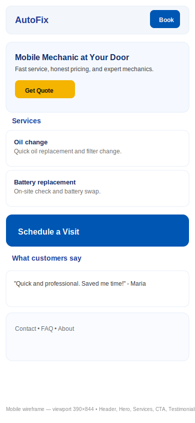
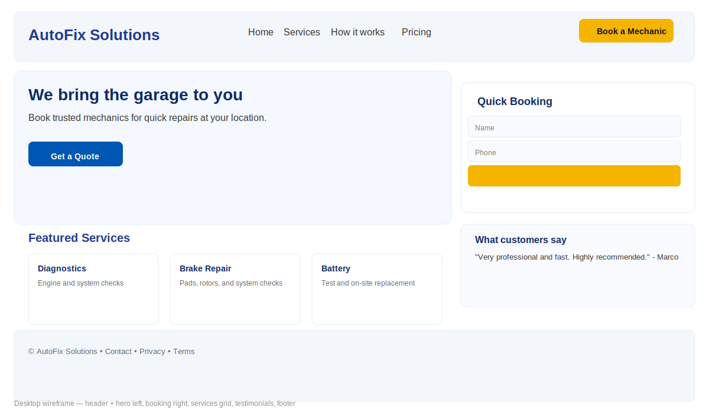

AutoFix Solutions
I chose this name because the site focuses on helping people get fast and reliable car repair services, offering guidance, tips, and booking options.
The purpose of this website is to provide users with helpful automotive maintenance information, quick service booking, recommended tools, and guidance to keep their vehicles in good condition. The site will serve as a simple hub for tutorials, contact information, and mobile mechanic services.
Below are the chosen site colors and their planned use:
The selected typography for this project is:
Below are the wireframes for the homepage. These are simple layout sketches and will guide the structure of the site.
Replace this image with your own sketch (photo or digital wireframe):
Replace this image with your own sketch (photo or digital wireframe):
